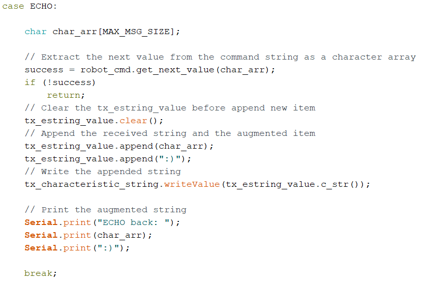
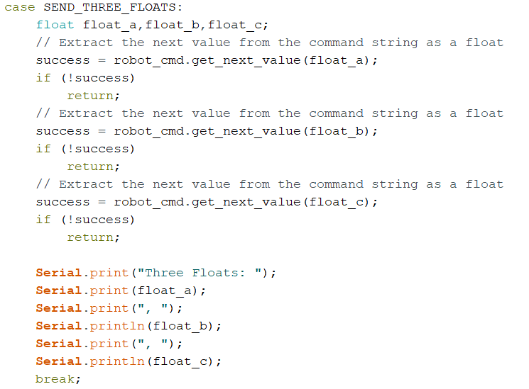
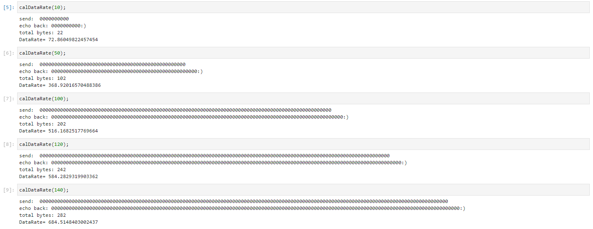

ECHO Command
Send an ECHO command with a string value from the computer to the Artemis board, and receive an augmented string on the computer.

SEND_THREE_FLOATS Command
Send three floats to the Artemis board using the SEND_THREE_FLOATS command and extract the three float values in the Arduino sketch.

Notification Handler
Setup a notification handler in Python to receive the float value (the BLEFloatCharactersitic in Arduino) from the Artemis board. In the callback function, store the float value into a (global) variable such that it is updated every time the characteristic value changes.

Demo
Effective Data Rate
As shown in the figure below, I wrote a function calDataRate(), using 'ECHO' command, to calculate the data rate of the BLE.



Reliability
To set the reliability, I set the interval of sending float message to be extremely short, such as 0.001 ms. To my surprise, the BLE performed quite well！ The computer read all the data published (without missing anything) from the Artemis board.